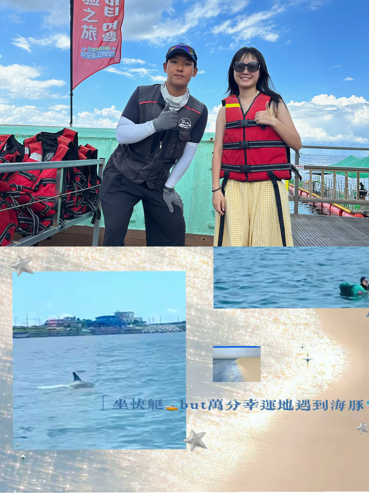
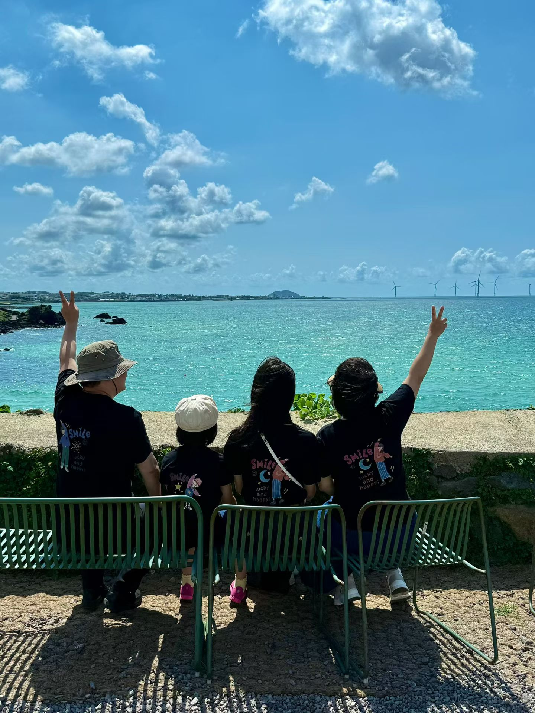
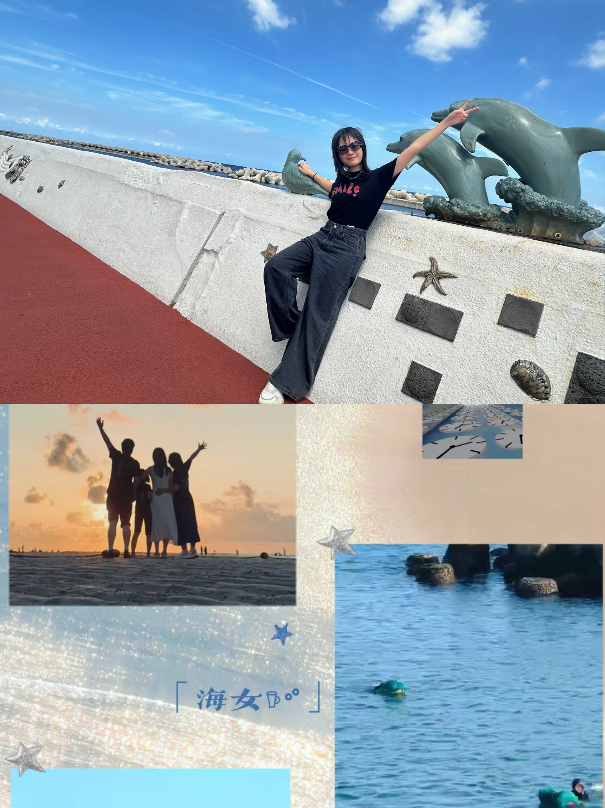

牛岛 · 海上的偶遇

牛岛的海，比想象中更蓝。 游艇驶出港口的时候，海面几乎没有风， 只剩下船尾切开的白色浪花。
船长忽然减速， 远处的海面像被谁轻轻点了一下。
第一只海豚跃出水面的时候， 船上的人几乎同时安静了。
它们不是海洋馆里训练好的表演者， 而是自由的、带着弧线的影子， 在海面上出现、消失、再出现。
有人开始惊呼， 有人举起手机， 而我只记得那一瞬间的海风， 像是整片海都在呼吸。
海风、火山石、与那些不经意的瞬间

牛岛的海，比想象中更蓝。 游艇驶出港口的时候，海面几乎没有风， 只剩下船尾切开的白色浪花。
船长忽然减速， 远处的海面像被谁轻轻点了一下。
第一只海豚跃出水面的时候， 船上的人几乎同时安静了。
它们不是海洋馆里训练好的表演者， 而是自由的、带着弧线的影子， 在海面上出现、消失、再出现。
有人开始惊呼， 有人举起手机， 而我只记得那一瞬间的海风， 像是整片海都在呼吸。

那是一家很不起眼的小店， 在一条几乎没有游客的小巷里。
门口的招牌只写着四个字——猪骨汤。
汤被端上来的时候， 白气一下子涌出来， 骨头炖得松软， 汤却意外地清。
妹妹喝了一口， 抬头说了一句： “这是我喝过最好喝的汤。”
后来几天， 我们又回去找过那家店， 却再也没有找到那个转角。
于是这碗汤， 就变成了旅途中最奇怪的遗憾。

清晨六点的海边， 天刚刚亮。
海面是灰蓝色的， 风很轻。
我和妈妈远远地看见几个身影， 她们穿着黑色潜水服， 慢慢走进海里。
那是济州的海女。
她们没有氧气瓶， 只带着一个小小的浮球。
过一会儿， 海面上就会出现“呼——”的一声呼吸。
那是她们从水里浮出来的声音， 像一口长长的叹息。
太阳慢慢升起来， 海面一点一点变亮， 她们的身影在水里起起伏伏， 像是和海一起生活的人。